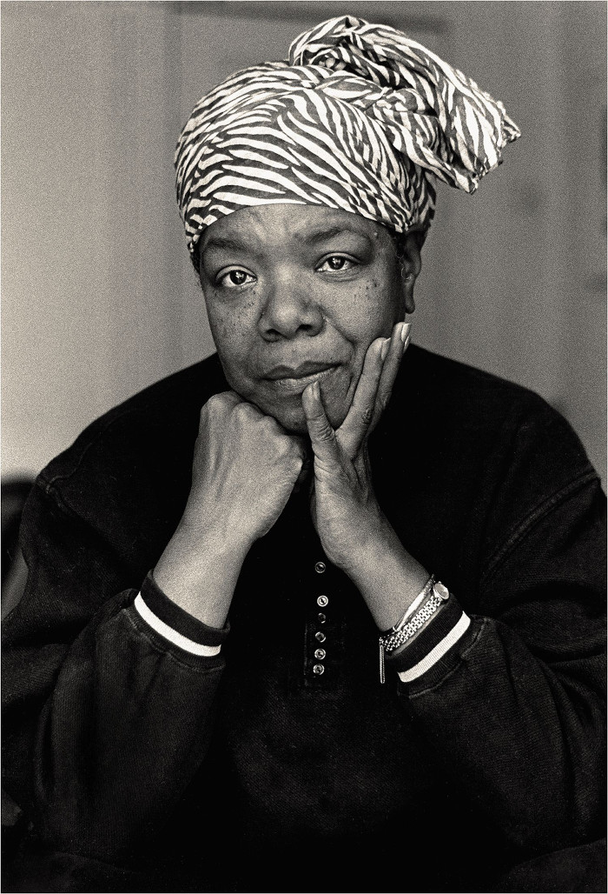

Ask for what you want, and be prepared to get it.
- 1928Maya was born as Marguerite Ann Johnson. Her brother gave her the nickname "Maya".
- 1958Maya began writing poetry. Soon she had moved to New York where she joined the Writer's Guild.
- 1959Maya worked diligently with Civil Rights activists. She became the coordinator for the Southern Christian Leadership Council.
- 1970After working on it for a few years, Maya puts out her work I Know Why the Caged Bird Sings. It was a huge success.
- 1972Maya was nominated for a Pulitzer Prize for her work Just Give Me A Cool Drink of Water 'fore I Die.
- 1993Maya is asked to read her poetry at the inauguration of President Bill Clinton. She read On The Pulse of Morning.
You should be angry. You must not be bitter. Bitterness is like cancer. It eats upon the host. It doesn’t do anything to the object of its displeasure. So, use that anger. You write it. You paint it. You dance it. You march it. You vote it. You do everything about it. You talk it. Never stop talking it.